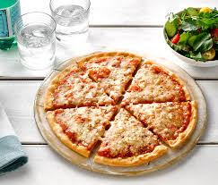

Home
The Pizza Margherita

Description
Margherita Pizza – With local cherry tomatoes, fresh mozzarella, and basil
from the backyard, this classic pizza is juicy, slightly sweet, and totally delicious.
Ingredients
- ½ cup pizza sauce (heaping)
- 8 ounces fresh bocconcini mozzarella, sliced
- ½ cup sliced cherry tomatoes
- 10 fresh basil leaves
- Red pepper flakes
- Extra-virgin olive oil, for drizzling
Instructions
- Spread the pizza sauce onto the dough.
- Top with the fresh mozzarella and tomatoes.
- Bake for 10 to 12 minutes, or until the crust is browned.
- Remove from the oven and top with fresh basil leaves and a pinch of red pepper flakes.
- Drizzle with olive oil and serve.